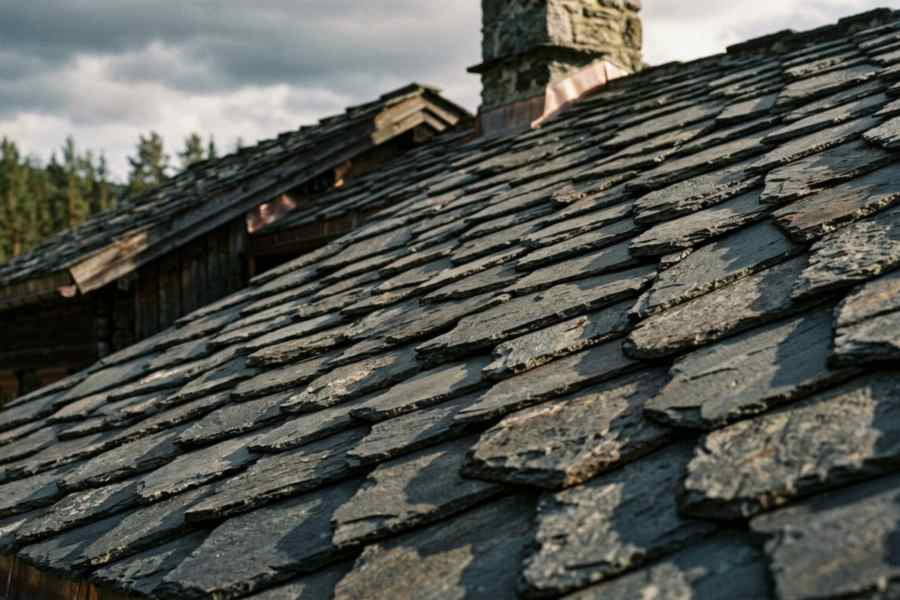
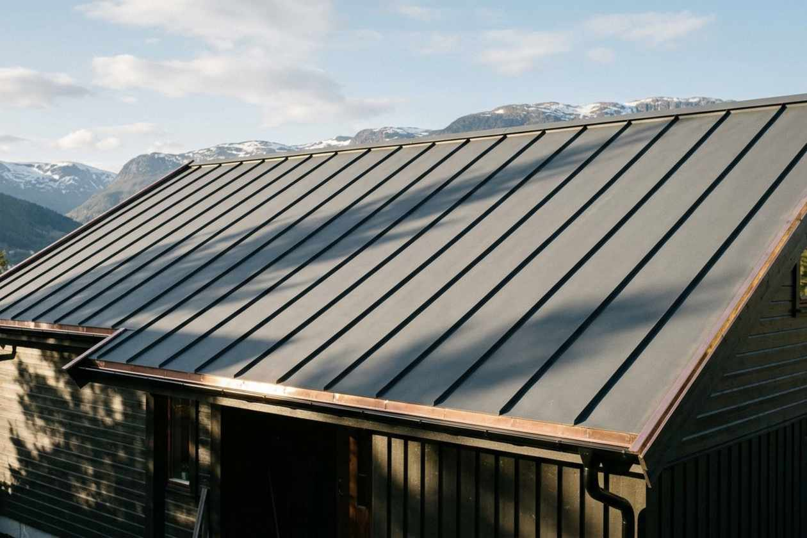
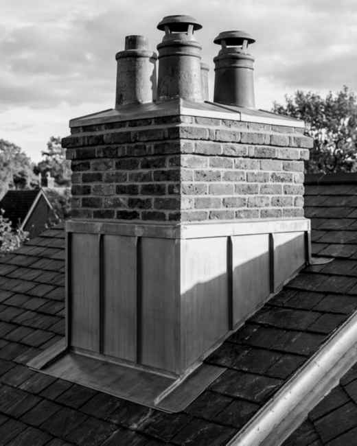
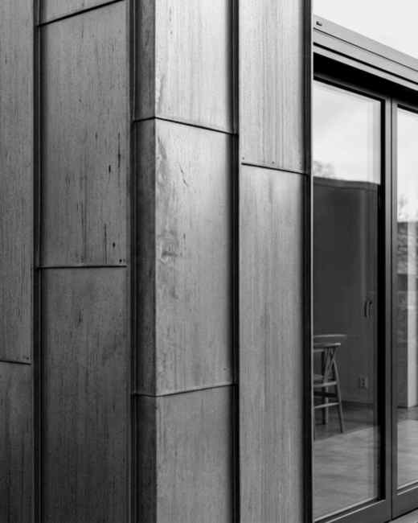

Taktekker- og blikkenslagerbedriftenes Landsforbund · Org.nr 987 654 321 MVA
Faget vårt er taket ditt / Siden 1994
Tak somtåler norskeår.
Taktekking og blikkenslagerarbeid for boliger, sameier og gårdsbruk i Oslo, Asker, Bærum og Nordre Follo. Fagbrev på alle som utfører arbeid, digitale befaringer med drone og fuktmåling — og ti års garanti på håndverket.
år i faget. Tre generasjoner taktekkermestre, samme verksted på Alnabru.
0
fullførte tak og beslagoppdrag siden 1994 — herav 410 sameier.
10år
garanti på utført arbeid, registrert hos forsikringsselskapet ditt.
0tsv
til tilbud etter befaring. Akutt skade: på plass innen 4 timer.
0,0
snitt på Google og TAKforbundets kundevaluering, 316 vurderinger.
Hva vi gjør / Åtte fagområder
Én bedrift på hele taket. Fra sperr til rennekrok.
Vi er taktekker og blikkenslager — ikke det ene eller det andre. Det betyr at overgangen mellom tak, vegg, pipe og renne blir utført av samme folk som eier ansvaret etterpå. Klikk på et fagområde for detaljer, prisnivå og hva som er inkludert.
Nytt tak dimensjonert etter norsk klimasone: undertak, lekter, tettesjikt, overgangsbånd og håndformede beslag. Vi planlegger fall og renneløp før første spiker, og dokumenterer alt i tilstandsrapporten som følger jobben.
Riving av eksisterende tak
Undertak og fuktsikring
Lekting etter krav
Falsing og sveising på stedet
Snøfangere og stigetrinn
Avfall og gjenvinning
Prisnivå fra 1.190 kr/m²Typisk varighet 5–12 dagerGaranti 10 år
Over 60 % av våre oppdrag er rehabilitering av eksisterende tak. Vi kontrollerer konstruksjon, helning og fuktnivå, og velger mellom påleggsduk, ny duk eller full utskifting. Målet er et tettesjikt som er minst like godt — med kortere byggetid og mindre avfall.
Fuktmåling før beslutning
Ny tettesjikt over eksisterende
Forbedret fall mot sluk
Nye overganger og beslag
Ventilert undertak
Dokumentasjon til borettslaget
Prisnivå fra 740 kr/m²Typisk varighet 3–8 dagerOfte aktuelt på tak over 25 år
En digital takvurdering gir deg faktiske måledata i stedet for en magefølelse. Vi fotograferer hver kvadratmeter i 4K, tar termiske bilder som viser fukt under duken, og måler med fuktmåler der det trengs. Du får rapporten i forstandig språk, med risikoklasser og vedlikeholdsplan.
Dronebefaring 4K
Termografi etter ISO 6781
Fuktkartlegging
Vurdering av beslag og gjennomføringer
Risikoklasser 1–5
Muntlig gjennomgang på telefon
Pris 2 990 kr — trekkes fra ved ordreTid 1–2 timerRapport 48 t
9 av 10 takskader vi ser starter i en overgang, ikke på flaten. Derfor bruker vi uforholdsmessig mye tid på beslag: håndformede V-kast, innbrettede falsar, tettesjikt som fortsetter oppover, og gjennomføringer med riktig mansjett. Materialet er kobber, zink eller aluminium etter hva veggen tåler.
Vindskier og G- / V-beslag
Takfot og værpanelovergang
Takvindu og lufteluker
Rør- og ventilasjonsgjennomføringer
Rekkverkfester og snøfangere
Sluk og kummer
Prisnivå fra 495 kr/mEmnene 0,8–1,0 mmLevetid opptil 70 år
Renner dimensjonerer vi etter 50-års nedbør, ikke etter hva som fantes fra før. Vi lager søyløse lengder på verkstedet vårt på Alnabru i zink, kobber eller lakkert aluminium, med skjøter som er sydd og lodde — ikke limt. Fallet legges mot kummer, og vi monterer beslag som tåler ising.
Søyløse renner til 12 m
Nye kroker og beslag
Nedløp og stamp
Overløp og tette gjennomføringer
Rennehylser og løvfilter
Isingforberedelse
Prisnivå fra 395 kr/mKapasitet opptil 2,5× gammel renneEgenkontroll vannprøve
Pipeovergangen er den mest utsatte detaljen på taket — bevegelse, varme, is og møter mellom materialer. Vi lager beslaget på mål etter pipe, med drygg, forkledning, bunnplate og to-lags tetting, og godkjenner løsningen sammen med feiervesenet der det kreves.
Bunnplate og drygg
Forkledning på to sider
Overgangsbånd i bly eller duk
Nye piper i zink eller stål
Ventilatorer og hatter
Motsjekk av beslag
Prisnivå fra 12 900 kr/pipeTid 1 dagKrav Tek 10 §6-56
Vegg og tak henger sammen. Vi kler hjørner, gesimser, takfot og pipevegger med stående fals eller panelsystem, med bakluft, diffusionstett lag og riktig overgang til vinduer. Resultatet er en fasade som tåler slagregn i vest og ikke sprekker seg om ti år.
Hjørne- og kantbeslag
Gesims og takfot
Vinduskant og listefrie overganger
Brann og fuktdetalj ved pipe
Patina- eller lakkert overflate
Fargevalg med NCS-prøver
Prisnivå fra 1.980 kr/m²System 0,8 mm zinkLevetid 60+ år
Ved storm, tre på taket eller vannskade i takfoten ringer du vaktnummeret — vi er på plass samme dag innenfor sonen, med presenning, midlertidige beslag og fukttørking i samarbeid med skadefaget. Alle våre kunder får gratis ettersyn neste vår.
Vakt 06–22 alle dager
Presenning og nødtetting
Dokumentasjon til forsikring
Fjerning av løv og gror
Etterse av beslag
Årlig serviceavtale
Respons innen 4 timerServiceavtale fra 1 990 kr/årArea Sone 1–2
Materialvalg / Fem taktyper
Kunnskap om taket du allerede har.
Før du vurderer nytt tak, bør du vite hva taket ditt heter. Klikk deg gjennom de vanlige typene i Oslo-området: forventet levetid, prisnivå, vedlikehold og feilene vi ser mest til på akkurat den typen.
Skifer og helletak
Håndhugne heller på lekter, med kobberbeslag og takrenner som ofte er eldre enn huset. Vakkert, tungt og nesten udødelig — men underlaget, lekter og beslag har kortere levetid enn hellene selv. Vi tar vare på de gamle hellene der det kan forsvaras.
Forventet levetid
100 år
Prisnivå
1 900–2 800
Vedlikehold
Middels
Kvalitetsnivå
Premium

Hadelandsskifer · Abildsø
Vanlige feil vi ser
Rustne eller for korte lekter under hellene
Utvaskede spikerhull og oppsprekket mørtel på egg
Kobberrenner forsøplet av zinkavrenning
Rot og mose i skjøter som løfter hellene
Slik går vi fram
Numerering og lagerføring av alle hellene før tak
Nye lekter, undertak og beslag — gamle heller tilbake
Vinterklart før første snø
Stående stålfals
Zink, kobber eller lakkert stål i 250–430 mm brede striper, der falsene griper om kontollistene. Vårt vanligste valg på nybygg og rehabiliterte gårder — tåler hard vind, kan legges på svake hellinger fra 14°, og gir et rytmisk skyggemønster som endrer seg med lyset.
Forventet levetid
60 år
Prisnivå
1 290–1 850
Vedlikehold
Lavt
Helling fra
14°
0,8 mm zink · 340 mm fals · Bogstad
Vanlige feil vi ser
For liten sidelengs bevegelighet i falsen
Kantlister som tar vann ved snølast
Galvanisk korrosjon mot kobberbeslag
Maling på zink uten grunning
Slik går vi fram
Falsing på taket med elektrisk falsmaskin
Glidelag og riktig bevegelighet i alle ender
Tettesjikt i samme system som flaten
Heltak og shingel
Bitumenshingel på OSB-plate — ofte på hytte, garasje og påbygg. Rimelig og raskt å legge, men svært følsomt for underlag, hellning og solvendt flate. Legger vi om, bytter vi lekter og undertak først, og bruker shingel som er beregnet for ventilert undertak.
Forventet levetid
30 år
Prisnivå
749–1 090
Vedlikehold
Høyt
Kritisk detalj
Fukt
Shingel + V-beslag · Nordre Follo
Vanlige feil vi ser
Baldrus og alger på sørvendt flate
Spiker gjennom shingel (feil spikret)
Kondens under platen pga. manglende ventilasjon
Oversømmede skjøter ved takfot
Slik går vi fram
Nytt underlag med luftet sjikt
Selvklebende underduk i utsatte soner
Oppgradering til metalltak anbefales over 35 år
Betong- og leirtakstein
Glatte takstein med falsoverlapp, lagt på motstående lekter — typisk for 1960–80-talls villaer. Steinen holder i en mannsalder, men undertaket og beslagene holder sjelden like lenge. Ofte er en ny tettesjikt under samme stein hele løsningen.
Forventet levetid
60 år
Prisnivå
890–1 390
Vedlikehold
Middels
Kraftinndating
God
Betongstein 10° omlegt · Manglerud
Vanlige feil vi ser
Undertak sprukket etter 30 år
Stein som glir ved for lite overlapp
Mose i fals og manglende snøfangere
Renne lagt utenfor steinets forkant
Slik går vi fram
Delvis avtak — ny duk under eksisterende stein
Nye festelekter, beslag og snøfangere
Rydding og impregnering etterpå
Flate tak og papp
Påbygg, garasjetak og takterrasser. Her er fall, sluk og overgang ved vegg alt som avgjør om det holder. Vi bruker sveisebar polymerduk (PVC/TPO) eller to-lags modifisert bitumen, med oppbrettede skjøter og glideflater for bevegelse.
Forventet levetid
32 år
Prisnivå
990–1 650
Vedlikehold
Middels
Minimum fall
1:80

1,8 mm TPO, varmluftssveis · Sørkedalen
Vanlige feil vi ser
Stående vann i grunne dammer
Løftede skjøter ved pipe og vegg
Mekanisk skade fra møbler og stiger
Tett sluk uten overløp
Slik går vi fram
Nytt fall med kileisolasjon mot sluk
Oppbrette skjøter og UV-beslag
Vannprøve i 24 timer før overlevering
Der taket svikter / Seks utsatte punkter
Trykk på taket. Se hva som går galt.
Ni av ti vannskader vi utbedrer starter i et beslag, ikke på takflaten. Diagrammet under er snittet av et helt vanlig tak i Oslo — klikk på punktene for å se hva vi sjekker, hva feilen typisk koster og hva vi gjør med den.
Punkt 01 / 06
Takrenner og nedløp
Rennene er dimensjonert for vann, ikke for is. Når rennekrokene trekker seg eller fallretningen er feil, står vannet langs takfoten og fukter opp værpanel, gesims og takfotsbjelker. Vi sjekker fall med vannpass, teller kroker per meter, og ser etter hvit stripe på fasaden — det klassiske tegnet på overslag.
Dra skyveren for å sammenligne før og etter. Alle tallene er fra våre egne fagsystemer — bare navnene er endret. Under finner du detaljbildene: det er her man ser hva håndverket egentlig består av.
Før · 1897Etter · 2026
◀▶
Dra skyveren · bruk også piltastene
V-kast · håndbrettet kobberRenne · sydde og lodde skjøterPipebeslag · zink med dryggFasade · 0,8 mm zinkHeller · numerert på nyttSkjøter · 40 mm overlapFals · 340 mm, elektrisk maskinBefaring · termobilde
Slik jobber vi / Fem trinn
01Befaring
Befaring og takvurdering
Tilstandsrapport
Tilbud med fast pris
Utførelse på taket
Overlevering og tilsyn
Ingen skjulte gebyrer, ingen «vi tar for litt mer underveis». Du får en egen prosjektkontakt som svarer innen en time i arbeidstid — og bildene fra taket ditt havner i en digital mappe du beholder for alltid.
Vi begynner oppe. Dronen går to runder med 4K og termisk kamera, mens en taktekker med fagbrev går over taket for å måle med fuktmåler. Du trenger ikke være hjemme — vi tar 40–60 bilder og en kort video du får tilsendt samme dag. Tar 90 minutter, er gratis og forplikter deg til null.
40–60 bilder
Termobilde av fukt
Måling av areal og hellning
Prøve av underlag
Trinn 0248 timer etter
Tilstandsrapport du forstår
Rapporten er ikke et forsikringsvedlegg skrevet for jurister. Én side per takflate, med risikoklasser 1–5, hva som må gjøres nå, hva som kan vente ti år, og hva en feil vil koste dersom du venter for lenge. Alt knyttet opp mot bildene fra befaringen.
Risikoklasser
Prioritert tiltaksliste
Vedlikeholdsplan 10 år
Kostnadsanslag per tiltak
Trinn 03Innen 5 virkedager
Tilbud med fast pris
Du får tre løsninger i stedet for én: Funksjonell, Standard og Premium — med materialvalg, levetid og pris per m² tydelig ved siden av hverandre. Fast pris, 30 dagers bindingstid, og du velger selv om du vil betale i to eller tre terminer uten renter. Vi forklarer alle poster på en telefonsamtale om du vil.
3 løsninger
Fast pris
30 dagers gyldighet
Delt betaling uten renter
Trinn 041–8 uker fram
Utførelse på taket
Oppsett med rekkverk foran stigen, plast og presenning på alt som kan bli vått, og en tavle i innkjørselen med dagens plan. Vi jobber 07–16, rydder gården før vi går, og legger ut nye bilder i prosjektmappen hver kveld. Skjer det noe uforutsett — et rått åser eller et skadet undertak — ringer vi før vi gjør noe som koster penger.
Egen prosjektkontakt
Daglige bilder
Værfast plan
Ryddet og ryddig
Trinn 05Avslutning · +1 år
Overlevering, garanti og tilsyn
Vi går taket sammen med deg med sjekkliste fra TAK-forbundet, tar vannprøve av rennene og måler fukt én siste gang. Du får garantibevis, faktura og dokumentasjon registrert hos forsikringsselskapet og hele fotopakken som PDF. Etter ett år kommer vi tilbake for gratis ettersyn av beslag og skjøter.
Garantibevis 10 år
Vannprøve av renner
Fotomappe som PDF
Gratis ettersyn etter ett år
Trygghet / Det vi faktisk står for
Garantien vår er ikke en setning i en brosjyre.
Dette er hva som gjelder rent konkret hvis noe er feil. Ingen «normal slitasje er unntatt»-finter, og ingenting du må kjøpe fra oss for at garantien skal gjelde.
Håndverk10 år
Garanti på utført arbeid. Feil vi har gjort, fikser vi på vår regning — også ti år etter, så lenge vi ble varslet før fristen.
Materialer15–30 år
Systemgaranti fra produsent på duk, membran og metall. Vi registrerer produktet ditt, slik at garantien følger taket og ikke deg.
Skjulte feil5 år
Ansvar for skjulte mangler i fem år etter overtakelse, iht. alminnelige garantivilkår. Du får skriftlig oversikt over hva som kreves av deg.
Forsikring200 mill.
Yrkesansvarsforsikring gjennom TBL. All dokumentasjon lastes opp i saken din samme uke.
Vær og oppfølgingGratis ettersyn
Ett år etter at vi er ferdige, kommer vi tilbake. Vi sjekker beslag, renner og skjøter etter en vinter — og rydder vi må, er det ikke noe vi fakturerer.
Personale17 fagarbeidere
Fagbrev som taktekker eller blikkenslager. Ingen innleide underentreprenører på tettesjikt og beslag.
Sertifiseringer og medlemskap
Lært av Hovden®Medlem av TBLTAK-forbundets kvalitetsordningIcopal ProffutførerHMS-1 og HMS-FagarbeiderDronesertifisert A1/A3Opplæring i fallverktøyReell fagopplæring
Vilkår du kan leve med
Ingen forskuddsbetaling over 15 %. Vi stiller garanti til søknader om lånfornyelse og borettslagssaker, og svarer på epost om din sak innen én virkedag.
Daglig leder og taktekkermester34 år i faget · mesterbrev 2004

Marte Lie
Faglig leder, rehabiliteringBlikkenslager · 12 år
Simen Aas
Takinspektør og dronepilotByggmester · A1/A3

Yosef Tekle
Serviceteam, vakt og småjobberLærlingmester · 9 år
Må jeg skifte hele taket når jeg bytter renner?+
Som regel ikke. I omtrent sju av ti saker holder det med nytt beslag, ny undertak i rennesonen og riktig fall — en jobb vi gjør på én dag. Vi anbefaler aldri utskifting av tak der taket er friskt, og skriver inn i tilbudet hvorfor vi valgte å la være.
316 vurderinger / 4,8 snitt
Kundene merker at vi måler.
Vi samler inn vurderinger via kundeundersøkelsen vår etter alle oppdrag, og publiserer dem uendret — også de tre vi ikke er så stolte av. De siste tolv månedene: 4,9 på utførelse, 4,7 på kommunikasjon.
”
De var de eneste som sa ja til å ta vare på de gamle hellene. Alle andre ville kjørt bort hele taket. Fire måneder seinere er det fortsatt ikke en dråpe innpå badet.
★★★★★Lars Erik HovdenPrivatkunde · Helletak fra 1897, Abildsø
★★★★★Google · for 3 uker siden
Stor opprydding, ikke et spiker igjen i innkjørselen. Tilbudet holdt til krone.
Ingjerd S. · BekkestuaNytt tak · 164 m²
★★★★★TAK-forbundet · oktober
Vannet rant langs pipebeslaget i fem år. Fikset på én dag, og forklarte hvorfor det hadde skjedd.
Sameiet Ullevall · 38 seksjoner4 pipebeslag
★★★★☆Google · september
Litt lang tid mellom tilbud og oppstart — men de ringte hver uke og sa når. Jobben var feilfri.
Marius T. · Nordre FolloRenner + takfot
★★★★★Vakt 2. juledag
Tre ned på taket 2. juledag. Kom innen tre timer, teppet igjen og kom tilbake 27. desember for å gjøre det skikkelig.
Svar på fire spørsmål. Få et prisanslag med en gang.
Anslaget er kalkulert fra prisene vi faktisk brukte i 2026 — ikke et skjema som sender deg til en selger. Fullfører du, tar vi med svarene dine til befaringen, og du får tilstanden vurdert gratis.
Bestill befaring /Gratis
Vi tar turen opp på taket ditt denne uka.
Befaringen tar 90 minutter, koster ingenting og forplikter deg til null. Du får rapporten i digital mappe — og kan bruke den som grunnlag hos annen entreprenør hvis du vil det.
Vi holder til i egen gård på Alnabru, med beslagverksted, bøyemaskin og lager av zink, kobber og aluminium. Dørene står åpne for kunder mellom 07 og 15 — her kan du se hvordan et beslag blir til mens du venter på påskrift.